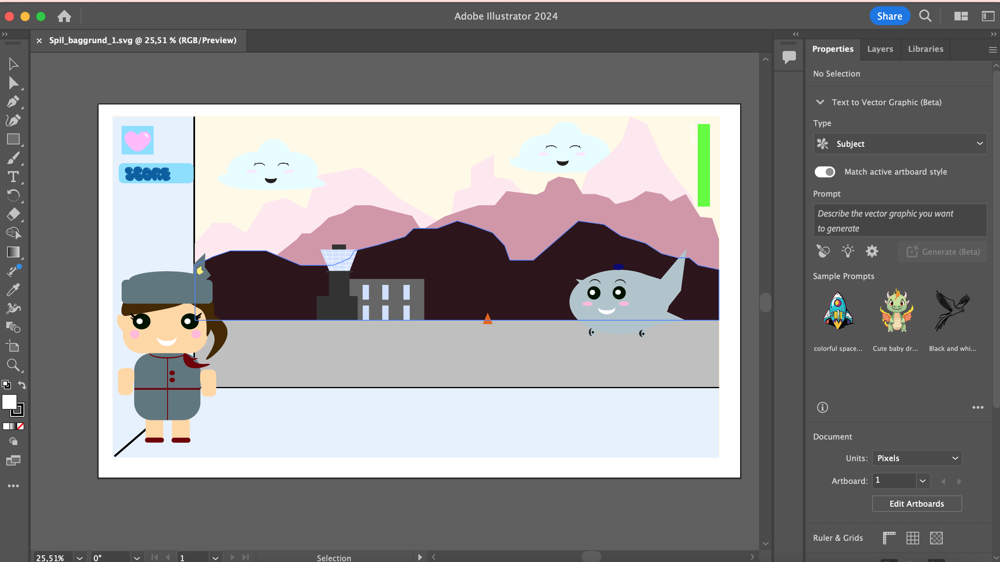
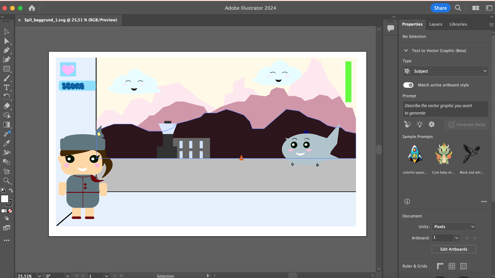

Tema 4 - Animation
Temabeskrivelse
Tema 4 beskæftigede sig med grundlæggende, tværfaglige principper for planlægning, design og udvikling af digitale brugergrænseflader og medieproduktioner baseret på forståelse af afgrænsede udviklingsprocesser. Ydermere skulle vi bruge javascript sammen med css animationer, til at skabe et lille spil som både skulle have et koncept og en idé man selv havde fundet frem til. Derudover designede vi vores egne elementer og kodede spillet helt fra bunden. Vores spildesigns skulle udvikles efter moderne konventioner. Helt konkret startede processen af vores visuelle koncepter i research af valg af genre og stil, som man senere brugte til inspiration til egen fortolkning af design og spil. Dernæst begyndte skitsering i form af moodboards, figur-skitser, layout-skitser og Style Tiles. Til sidst blev rentegninger af grafikken lavet i Adobe Illustrator. Gennem arbejdet med spillet, lærte vi at arbejde med aktivitets-og state machine diagrammer, som blev brugt til at planlægge det mere komplicerede interaktive flow. Afslutningsvis testede vi spillet af i klassen, hvor ens spil blev testet af medstuderende samt modtog feedback via Google Survey.
Hvad har jeg tilegnet mig?
Afleveringer
Proces - Airplane Mode
Skitsering
Illustrator
 

Aktivitets-og Statemachinediagram
Svampespillet - css positionering


Audition
Java Script


Skitsering og Illustrator
Vi blev straks kastet ud i idégenerering med hjælp fra 10 ideer øvelsen samt kryds-metode-liste øvelse. Jeg fandt hurtigt på et spil, der skulle foregå i en lufthavn med en stewardesse som main-character. Dernæst gjorde jeg mine overvejelser om hvilken stil jeg ønskede i mit spil. Jeg besluttede mig hurtigt for Kawaii stilen, som tilægger sig principper fra "Baby-bias" - store skinnende øjne, stort rundt hovede og lille næse. Figurene benytter sig af "bouba"-effekten for at fremhæve cuteness-faktoren, hvilket min stewardesse, flyvemaskine og skyer også er inspireret af. Efter jeg besluttede mig for min stil, påbegyndte jeg min paper-prototype. Dette gav mig en bredere visualisering for spillets flow. Fx. man har 20 sek til at indsamle min. 15 pas. Absolut-flasken mister man 1 liv på og man har kun 3 liv i alt. Herfter tegnede jeg mine elementer i Illustrator ved hjælp af form-sheetet. Her fandt jeg ud af, hvordan man kan tegne med former i Illustrator og komponere forgrund, mellemgrund og baggrund, så det giver et mere realistisk perspektiv.
Diagrammer og CSS positionering
Dernæst i processen, så lavede jeg mit aktivitetsprogram i VSCode med draw.io-udvidelsen, som bruges til at beskrive interaktive systemer. Altså det hjalp på at forstå handlinger og beslutninger i mit spil mere detaljeret og i en bestemt rækkefølge. Efterfølgende udarbejdede jeg mit State Machine diagram, som er endnu mere detaljeret og dermed blev en guide til hvordan spillet skulle kodes i JavaScript.